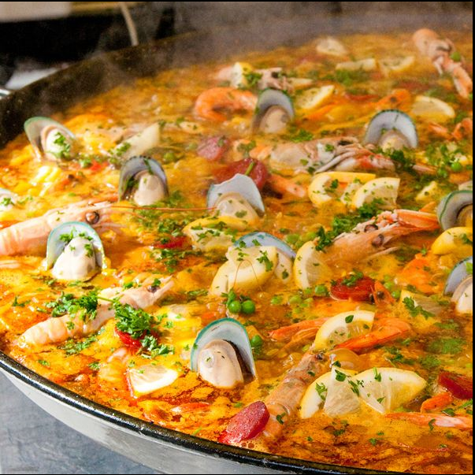
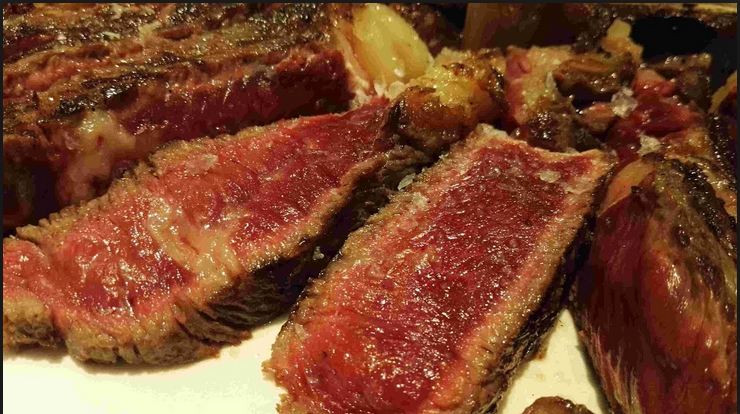
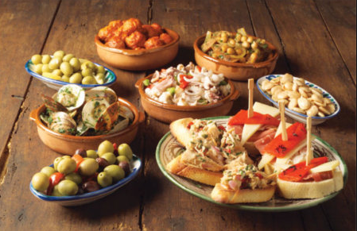

The iconic Paella feast filled with rice and seafood platter might just be the number one thing to get in spain. This platter is very unique because of its diversity of culture. Although the exact location is still unknown, many beleive that the platter originates in the city of Valencia. The dish may just be a perfect collaboration between 2 cultures from Spain , the Romans, for the pan and the Arab, that brought rice.

The autonomous region of the northwest of Spain, known as Galicia, is known for the delicious meats;Some may argue the best steak in the world. The steak is cooked to perfection, to the point where it melts in your mouth. Personally, my experience at the steakhouse in cantabria was the greatest meal I have had to this day.

Check out a video on the Galacian blonde steak
#3: Spanish Tapas
Best for last! You truly are not experiencing the Spanish Cuisine unless you try the tapas. Tapas are not a specific type of food; they are an assortment of small plates that Spaniards eat anytime of the day , anywhere. Many people refer to it as "bar food" where you can just sit down at a bar, order a glass of wine, and get some tapas with it. My personal favorite was the jamon iberico, which is a type of cured ham usually sided with a tetilla cheese

-Dawson Vainer